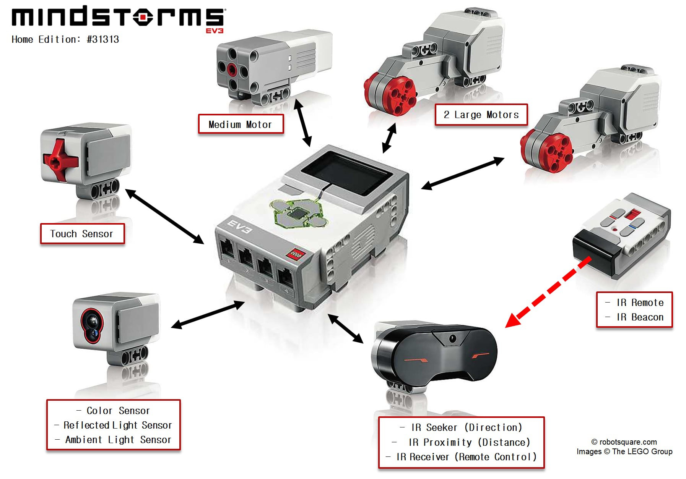
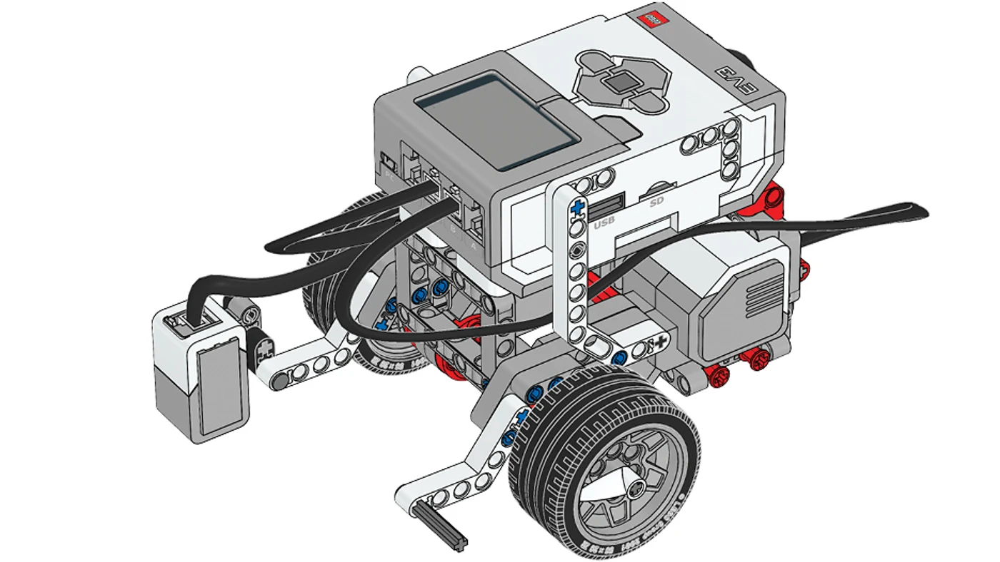
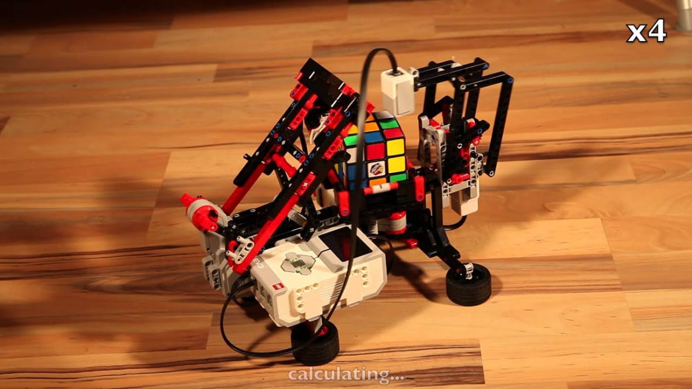
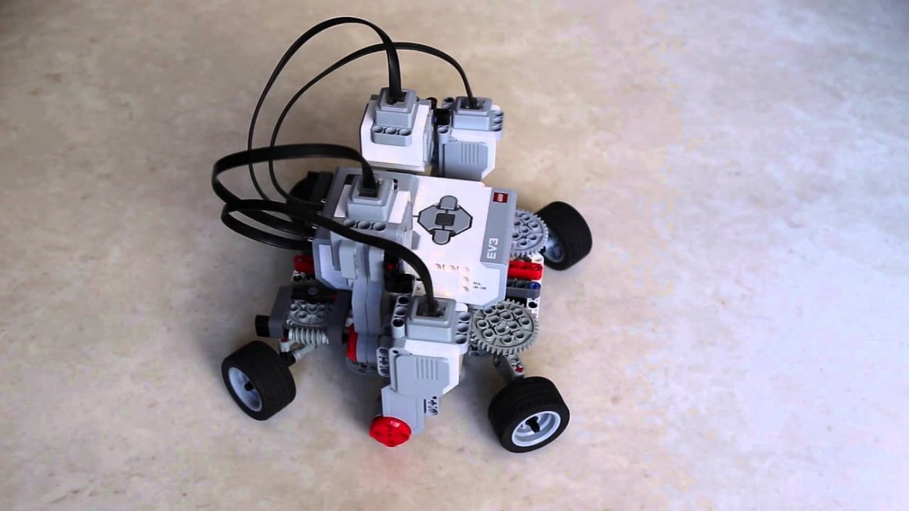
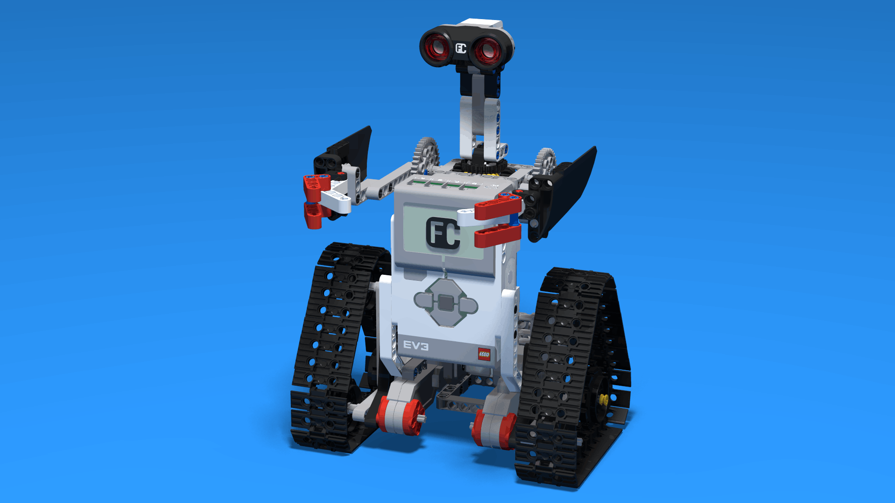
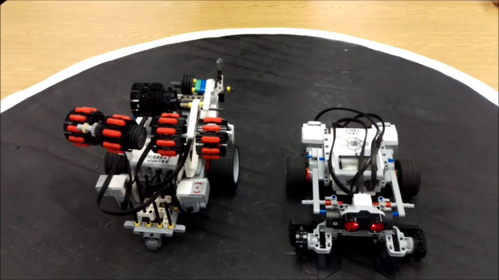

AI Website Generator
Touch szenzor – érzékeli a nyomást és a kiengedést, így programozott cselekvésekhez ad visszajelzést.
Színérzékelő – felismeri a különböző színeket és a fényerősséget (pl. vonalkövető programokhoz).
Infravörös szenzor és jeladó – a robot képes távolságot mérni vagy más EV3 jeladót követni.
Ultrahangos szenzor – pontos távolságmérést tesz lehetővé (pl. akadályok érzékelése).
Giroszkóp szenzor – elfordulási szög és orientáció mérésére használható (pl. egyenes haladás hiba korrekció).
Nagy teljesítményű servo motorok – erős mozgatást és pontos pozícióvezérlést biztosítanak.
Közepes servo motorok – gyorsabb, kisebb terhelésű mozgásokhoz.
Mindkét típus tartalmaz beépített fordulatszám‑érzékelőt, ami lehetővé teszi a pontos előre/hátra/fordulás vezérlést.
EV3‑szoftver – a legegyszerűbb, drag‑and‑drop programozási felület.
Scratch kiterjesztés – blokk‑alapú programozás számítógépen.
Python / harmadik fél szoftverek – haladó programozók számára is elérhető (pl. ev3dev Linux alapú külső firmware).
ARM9 alapú processzor, memóriával és USB, SD‑kártya foglalattal a bővíthetőséghez.
LCD kijelző és menüvezérelt rendszer, amivel közvetlenül a roboton is futtathatsz programokat.
4 db input port (szenzoroknak) és 4 db output port (motoroknak) a moduláris felépítéshez.
Áramforrásként használható AA elemek vagy külön megvásárolható újratölthető akkumulátorcsomag.

A EV3‑at világszerte használják iskolákban robotika, programozás és mérnöki gondolkodás tanítására. A készletben lévő útmutatók és tananyagok segítik a logikai gondolkodást, ciklusok, elágazások és érzékelő‑vezérelt viselkedések megértését.

Elsőre össze tudsz építeni a LEGO elemekből különböző robotokat: pl. járgányt, robotkart, akadálykerülőt, vagy bonyolultabb szerkezeteket is — mindegyiket programozhatod a saját logikád szerint.

Haladó felhasználók és egyetemi projektek esetén a EV3‑at akár kísérleti robotikai rendszerekhez, autonóm navigációhoz vagy mesterséges intelligenciát vizsgáló projektekhez is használják — például önvezető járművek érzékelő‑vezérelt döntéshozással.

Mivel LEGO Technic elemekre épül, szinte végtelen lehetőség van kreatív robotok, játékmechanizmusok építésére: mozgó figurák, kirakós robotok, akadálypályák stb. — mindez programozással kombinálva extra élményt ad.

A Mindstorms EV3 gyakran szerepel olyan robotikai versenyeken, mint például a FIRST LEGO League vagy egyéb STEM‑versenyek, ahol önálló navigációt, feladatmegoldást és szenzorokkal vezérelt viselkedést kell létrehozni.
Vonalkövető robot programozása
AI Website Generator